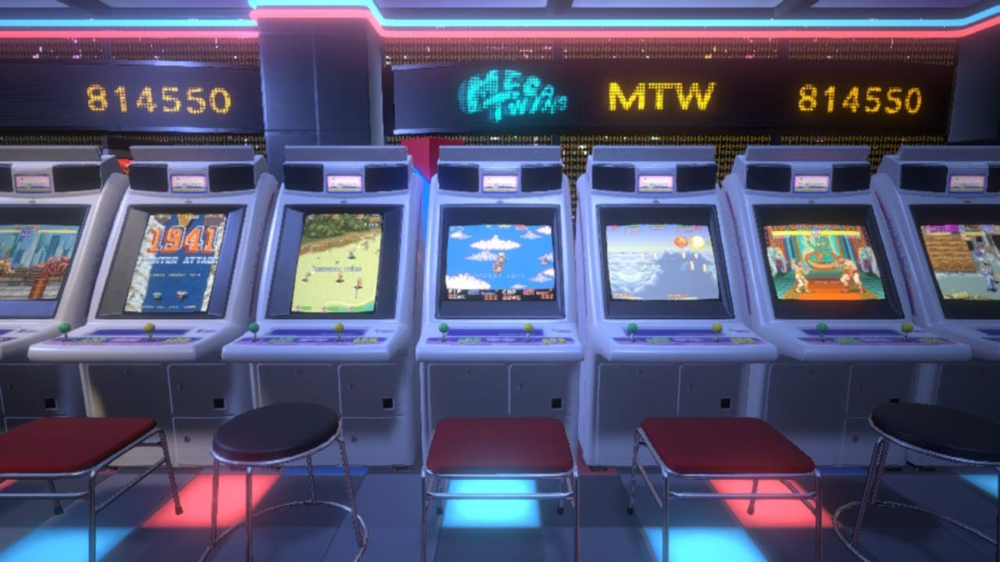
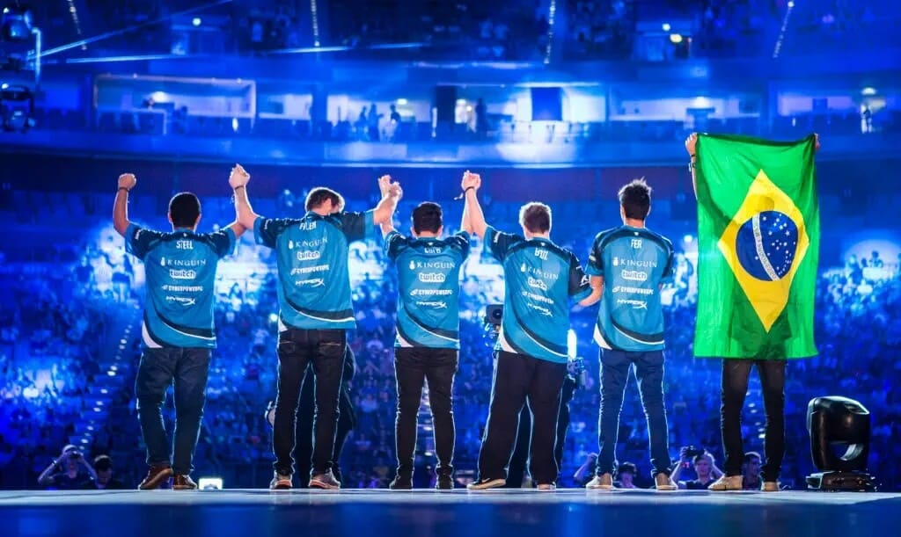

Jogando Além das Fronteiras: A Evolução do Gamer no Brasil
Este artigo explora a crescente cultura gamer no Brasil, desde suas raízes até os avanços atuais. Desde os primórdios dos fliperamas até a influência dos eSports e da produção nacional de jogos, mergulhe na jornada dos gamers brasileiros.
Por ChatGPT - OpenAI
24/11/2023 12h00
Nos últimos anos, o Brasil testemunhou uma revolução na cultura dos jogos eletrônicos. O que começou timidamente nas salas de fliperama de bairro se transformou em um fenômeno nacional, com comunidades vibrantes, eventos épicos e uma indústria crescente.
Os primeiros passos foram dados nas décadas de 80 e 90, quando os fliperamas eram o ponto de encontro para os apaixonados por jogos. Eles eram mais do que apenas arcades; eram espaços de socialização e competição, onde surgiam lendas locais nos jogos mais populares da época.
O boom dos consoles caseiros nas décadas seguintes expandiu ainda mais essa paixão. Os jogadores brasileiros abraçaram Mario, Sonic e muitos outros ícones dos video games. Contudo, o preço alto dos jogos e consoles importados limitava o acesso, criando uma cultura de adaptação e criatividade, com a produção de clones e adaptações de consoles.
Com o avanço da internet, o cenário mudou radicalmente. Comunidades online cresceram exponencialmente, unindo gamers de todos os cantos do país. O acesso mais fácil aos jogos, tanto por meio de plataformas digitais quanto pela produção nacional, impulsionou a indústria local. Jogos brasileiros começaram a ganhar destaque internacional, mostrando a criatividade e a qualidade dos desenvolvedores nacionais.
Além disso, os eSports tomaram o país e o mundo. Campeonatos locais e internacionais atraem multidões e equipes brasileiras se destacam em competições globais. Os eSports não são apenas uma forma de entretenimento, mas também uma oportunidade de carreira para muitos jovens talentosos.
No entanto, desafios persistem. A carga tributária pesada sobre os produtos importados ainda impacta o acesso a certos jogos e tecnologias. Além disso, a falta de suporte governamental à indústria de jogos limita seu potencial de crescimento.
Apesar desses obstáculos, a paixão dos gamers brasileiros continua forte. A comunidade se expande, os eventos crescem em magnitude e a produção nacional de jogos ganha reconhecimento merecido. O Brasil se tornou um protagonista no cenário global dos games, e sua jornada está apenas começando.